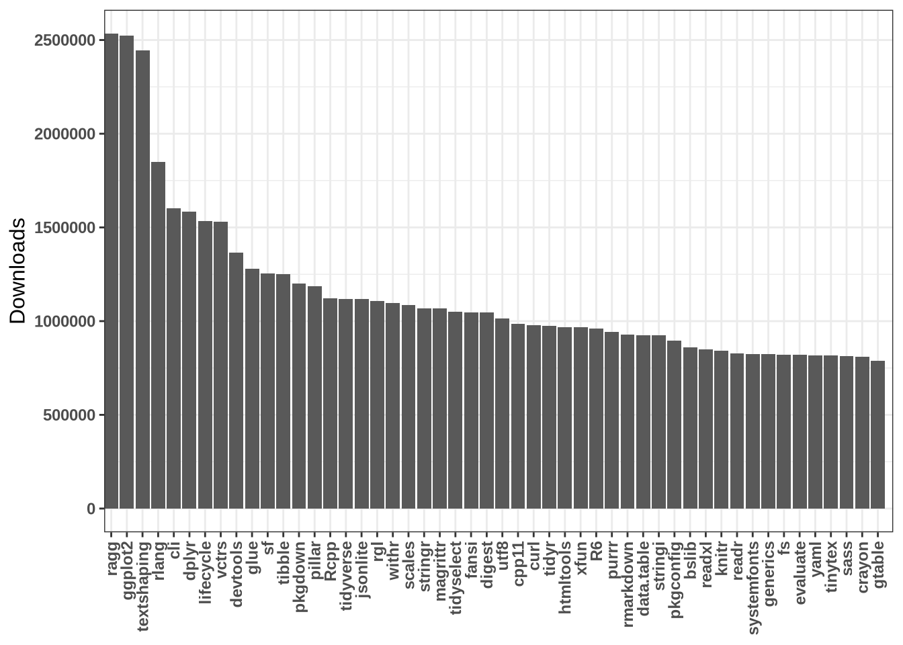

library(tidyverse)
library(magrittr)
library(cranlogs)
library(igraph)
library(visNetwork)Analysis of the top R packages
R
EDA
After a little while coding in Python every day for my work, I needed to make a break and perform some R analysis! Since the beginning of my postdoc, I haven’t followed the last trends concerning R packages. In this post, I am going to analyze some data about R packages to see what are the most downloaded packages during the past weeks. I will also visualize all the relationships between the R packages by looking at their required dependencies.
Let’s import the packages required for this analysis:
How to find the most popular R packages ?
The first thing is to gather the data about the number of downloads for each package. Luckily for us, there is a package called cranlogs that does just what we need ! With a simple line of command we can collect data about the 50 packages with the most downloads in the last month, we can then plot the result:
popular_pckg <- cran_top_downloads("last-month", 50)
popular_pckg %>%
mutate(package = fct_reorder(package, desc(count))) %>%
ggplot(aes(x = package, y = count)) +
geom_bar(stat="identity") +
scale_x_discrete(expand = expansion(mult = c(0, 0.02))) +
theme_bw() +
xlab("") +
ylab("Downloads")+
theme(axis.text.x = element_text(angle = 90, vjust = 0.5, hjust=1),
axis.title = element_text(size = 12),
axis.text = element_text(size = 9, face = "bold"),
plot.title = element_text(size = 14),
legend.position = "none") +labs(x = NULL)
I thought this graph will be harder to make because of the availability of the data but with the right package everything can be done !
Visualisation of the dependencies between packages
Once I saw the above graph, I was wondering about all the dependencies between these packages and I wanted to know which one was the most “connected”. To answer this question, I need more data, especially about the required dependencies of each package. After some research, I found out that data about package (including description and dependencies) can be extracted with a function in the tools package:
df_pkg <- tools::CRAN_package_db()[, c('Package', 'Imports')]
df_pkg <- df_pkg %>% filter(if_any("Package", ~.x %in% popular_pckg[["package"]]))However, this function extract the data for all the packages and I want to perform the analysis only on the top 50 popular packages. So I decided to couple the function of the cranlog package with the database I collected with the CRAN_package_db() function:
# Can be quite long hence the parallel map
#plan(multisession, workers = 12)
monthly_dl <- map(list(df_pkg$Package), function(x){sum(cran_downloads(x, 'last-month')$count)})
df_pkg$monthly_dl <- unlist(monthly_dl)
# write_csv(df_pkg, 'R_pkg_dl.csv')We can then filter by number of downloads:
df_pkg <- df_pkg %>%
distinct(Package, .keep_all= TRUE) %>%
arrange("monthly_dl") Now, it is time to prepare the data for a graph visualization. To make a graph, we need two tables. The first one must contain all the relationships between nodes (in our case nodes are packages), it has two columns : ‘from’ and ‘to’. The second table contains only one column with the names of the nodes.
import_cleaning <- function(text){
text <- gsub('\\s*\\([^\\)]+\\)', '', text)
text <- gsub('\\n', ' ', text)
text <- gsub(' ', '', text, fixed = TRUE)
text <- str_split(text, ',')
return(text)
}
import_cleaning(df_pkg$Imports[2])
test <- df_pkg %>%
mutate(cleaned_imports = import_cleaning(Imports))
df_target <- function(x,y){
df <- expand.grid(from=x, to=unlist(y))
return(df)}
for(i in 1:nrow(test)){
if(i == 1){
df_res = df_target(test$Package[i], test$cleaned_imports[i])
}else{
df_res = rbind(df_res, df_target(test$Package[i], test$cleaned_imports[i]))
}
}
links <- df_res %>%
filter(!is.na(to) | (to == ""))
nodes <- tibble(id=as.character(unique(unlist(df_res))))Once the two matrices are made, we can interactively visualize the graph network with visNetwork package:
visNetwork(nodes, links) %>%
visIgraphLayout(type = "full") %>%
visNodes(
shape = "dot",
color = list(
background = "#0085AF",
border = "#013848",
highlight = "#FF8000"
),
scaling = list(min=2,
max = 10),
shadow = list(enabled = TRUE, size = 10)
) %>%
visEdges(
arrows='to',
shadow = FALSE,
color = list(color = "#0085AF", highlight = "#C62F4B")
) %>%
visOptions(highlightNearest = list(enabled = T, degree = 1, hover = T)) %>%
visLayout(randomSeed = 11)Do not hesitate to move, zoom in or select packages to see their dependencies !